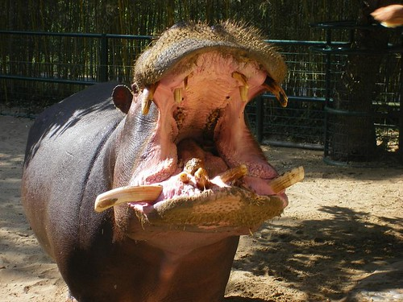

Top 10 Deadliest Animals
500 deaths per year
Before we get to small and deadly, let’s start with the biggest. When you think of deadly African wildlife, you might perhaps assume lions took the top spot. In actual fact, hippos kill many more people every year.
Causing an estimated 500 deaths annually (as compared to only 22 for lions), hippos are deadly land mammals. This is because they are very aggressive and territorial, and have a habit of charging at boats and capsizing them.
The people on board then either drown or are killed by the animals themselves. Weighing an average of 1,500 kg (males), with large sharp teeth, it’s certainly an animal you wouldn’t want to face up against.
